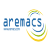
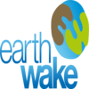
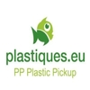
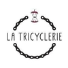
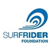
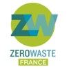

Voyons plus loin !
Si vous voulez en savoir plus et participer autrement au respect
de la planète bleue et de son environnement, vous pouvez surfer sur les sites suivants et en apprendre
d'avantage sur les différentes actions écologiques menées !
Aremacs
Association pour le Respect de l’Environnement lors des Manifestations
Culturelles et Sportives
Accompagnement à la réduction, la gestion et la valorisation des déchets en événementiel,
sensibilisation des publics et écoresponsabilité événementielle
Source : carenews

Earthwake
Et si le plastique pouvait être revalorisé en carburant ?
C’est le pari de cette association niçoise,
grâce à une machine que les cofondateurs ont baptisé Chrysalis.
Elle recycle les bouchons en plastique et les bouteilles de lait en carburant
qui permet aux camions poubelles de la communauté de communes Alpes-Azur de se déplacer.
Source : carenews

Plastic Pickup
« Notre devise, c’est trois déchets par jour,
et c’est plus facile que les légumes ! », peut-on lire sur leur site Internet.
Depuis 2013, l’association nantaise organise des collectes citoyennes de déchets.
Afin d’embarquer le plus grand nombre de citoyens dans cette démarches,
Plastic Pickup propose également sur son site
une carte interactive regroupant divers groupes et initiatives allant dans ce sens,
en France et même en Europe !
Source : carenews

La Tricyclerie
Un tiers des déchets de nos poubelles pourraient être compostés.
Partant de ce constat, la Tricyclerie propose aux commerçants
et entreprises un service de collecte de leurs déchets organiques… en vélo !
Six tonnes sont ainsi collectées puis compostées chaque mois.
Le compost produit par l’association est ensuite commercialisé chez des commerçants locaux.
Source : carenews

SurfRider
Surfriders Foundation Europe est un acteur majeur de la protection de l’océan
et des littoraux. Depuis plus de 30 ans,
l’association est en effet engagée dans la lutte contre les déchets aquatiques,
l’étude de la qualité de l’eau et la sensibilisation du grand public aux questions de l’aménagement
du littoral et les conséquences du changement climatique.
Surfriders Foundation Europe compte aujourd’hui près de 2 000 bénévoles
et a déployé son réseau dans onze pays européens.
Source : carenews

Zero Waste France
Créée en 1997, Zero Waste France (ex-Cniid) est une association
qui promeut le mode de vie zéro déchet et zéro gaspillage. Achats en vrac,
retour à la consigne ou encore compostage des déchets organiques…
autant de pratiques qui permettent finalement de traiter le problème à la source.
Zero Waste France a également inauguré en 2017 la Maison du Zéro Déchet,
un lieu qui a vocation à faire découvrir ce mode de vie.
L’association a récemment mis à disposition
des utilisateurs une carte interactive répertoriant toutes les initiatives zéro déchet
et zéro gaspillage en France.
Source : carenews

Rassemblement
Venez découvrir nos prochains rassemblement et inscrivez vous pour participer !